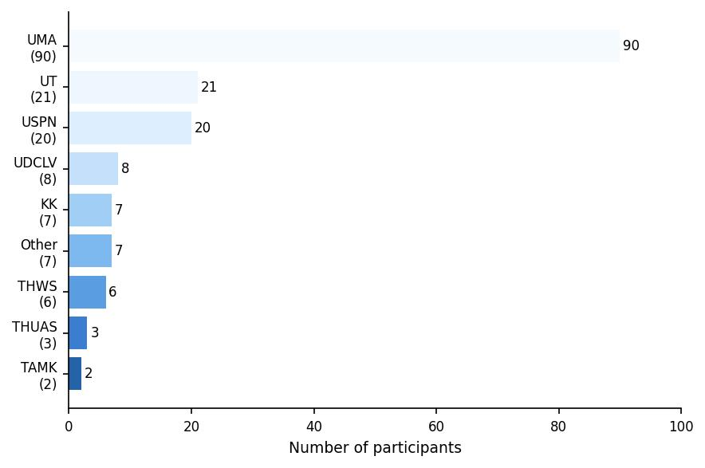
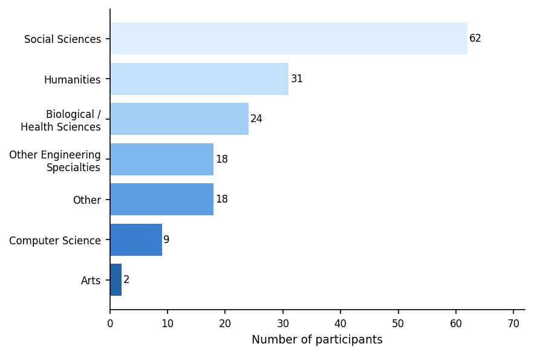
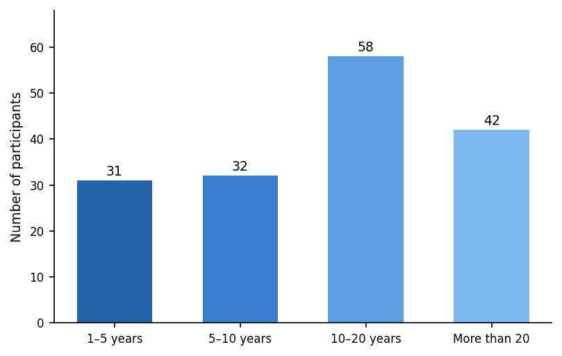
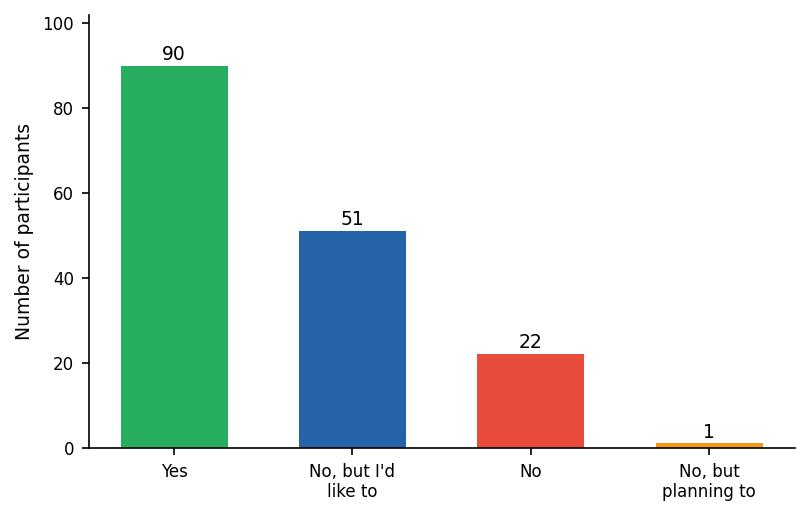

The dominant motivation across all profiles. Participants want concrete, practical strategies to incorporate AI into their courses — not just theoretical frameworks. Many are at an early stage and looking for a first structured entry point.
Strong interest in the international, cross-institutional dimension. Participants want to know what colleagues are doing, what works and what does not, and to benchmark their own practice. Several plan to bring what they learn back to their departments or communities of practice.
Many participants express concern about how AI is used, not just whether it is used. Recurring questions include how to foster students' critical thinking, how to assess AI-assisted work, and how to establish ethical guidelines. Academic integrity is explicitly mentioned by several respondents.
A significant subset — particularly those teaching large cohorts or first-year students — are motivated by the challenge of responding to students who already use AI, often without guidance. The interest is in moving from a defensive posture (against AI) to a constructive one (with AI).
Several participants have specific contexts in mind: language teaching (ESP, FLE, translation, English), STEM laboratory courses, architecture, mathematics, and teacher education. This points to an audience not looking for generic advice but for transferable models they can adapt to their own field.
A notable group — including coordinators, teacher trainers, learning managers, and PhD students — are attending with an institutional or research role in mind: improving training offers for colleagues, developing thesis work on AI in education, or staying current as part of their professional responsibilities.